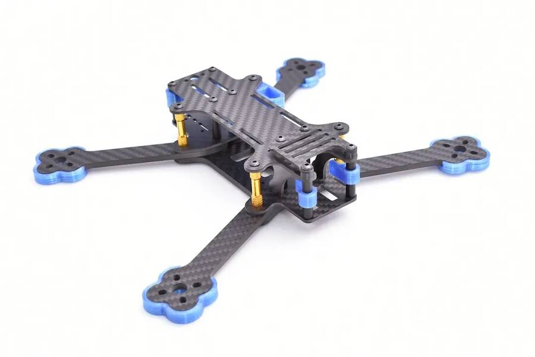
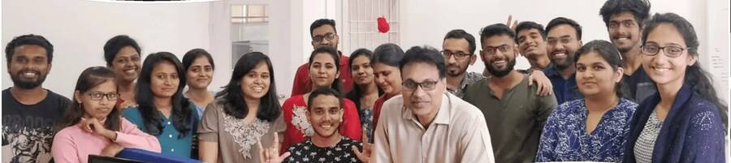
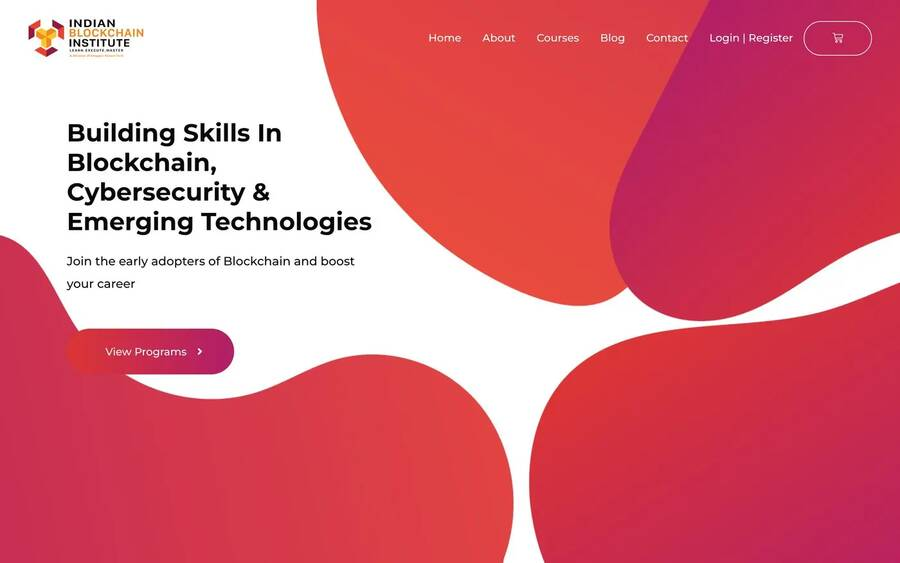
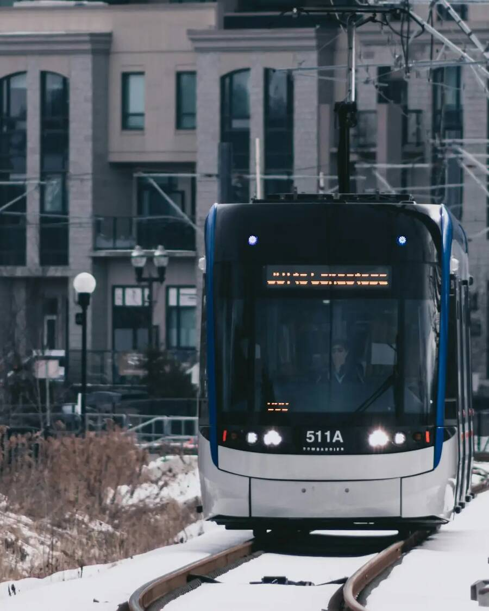

My first build was a small quadcopter, made from the motors and circuit boards of old RC cars.
Then C, a calculator and a business degree at Pune University.

RC cars never stayed in one piece for long at our house. I wasn't interested in driving them. I wanted to see what was inside, so I kept the motors and boards in a box until I had enough to build something bigger.
Later I learned C, and my first program was a calculator, like everyone's. I wanted to run a company one day and figured that meant understanding money first, so I studied business at Pune University.
I still take things apart to see how they work.
I joined as a marketing intern. Around a dozen people, mostly developers, and nobody had a fixed job description.

What I handled
- Design
- Video
- The WordPress site
- Client outreach
Evenings with the founders turned into the Indian Blockchain Institute, a school where engineers building blockchain products taught live classes.
I helped launch it.
COVID stopped live classes. The school had to work online, and the old setup couldn't.
- Bank transfer
- Developer checks payment by hand
- Course unlocked
- PDF quiz
- Marked one by one
- Checkout
- Instant access
- Quiz auto-evaluation
- Certificate
Proper hosting, LearnDash for courses and a checkout students could finish on their own.
course completions after the rebuild
The site still runs on this design today.

People picked a course, saw the price and left.
I built Power BI dashboards on sales, retention, drop-off, cart abandonment, traffic and ads. Every week I took them to leadership, and we planned the next change from what they showed.
What we uncovered in the weekly meetings
1Free courses
Didn't workFilled up fast. Almost nobody finished, because nothing was at stake.
2Monthly plans
Didn't workPeople recorded a whole course in a day and cancelled. We blocked recording; they found a jugaad anyway.
3A small sample, then a discount
WonA small sample program first, then a discount on the full course.
course sales after the change
Most of the fix wasn't code. It came from asking why until the answer was obvious.
After the rebuild I moved from marketing to development.
| Production sites | 3 |
| Daily hits | ~10,000 |
| Active users | 400 |
| Funnel tracking | GA + Microsoft Clarity |
| Conversion | +25% |
I built the frontend and worked on the smart contracts for a state government's blockchain e-tendering pilot.
Every contract and bid was recorded on the chain.
The acceptance letter from Conestoga came in the middle of the government project.
Leaving a job I was good at, at a company I'd helped grow, wasn't easy.
Waterloo was colder than anything I'd known.
I liked being back in a classroom. The professors knew their subjects deeply and the coursework didn't let you coast.
Conestoga College, two postgraduate certificates
| Certificate 1Computer Applications Development | 3.89GPA |
| Certificate 2Big Data Solutions Architecture | 3.81GPA |

It's where I first built my retail analytics and stock sentiment projects, the ones I later rebuilt on public data.
Amazon picked 24 people from more than 600 to launch Canada's first fully robotics-integrated sort centre. I was one of them.
I'm an Operations Analyst at Canada's first fully robotics-integrated sort centre. When the numbers move, I work out why in Excel and SQL.
I monitor 1,000 robotic drive units, 40 induct stations and the conveyor system.
throughput accuracy against SLA
I started at Amazon on the floor in early 2025, which meant I learned how the building works from the ground up before the robotics site opened. I also wrote SOPs for the floor and train new associates.
Watching that floor run brought back the feeling from those RC cars.
I'm looking for data analyst, BI and junior data engineering roles anywhere in Canada. If that sounds like your team, I'd love to hear from you.
At Snapper I rebuilt the course platform and completions went up 27%. Then we changed how courses were sold and sales went up 175%.
At Amazon I help keep a sort floor of 1,000 robots at 98.5%+ throughput accuracy.
I'd like to do this kind of work full time on a data team.
| Now | Operations Analyst, Amazon Canada, since 2025 |
| Before | Full-Stack Developer, Snapper Future Tech, 2020 to 2023 |
| Experience | 4+ years |
| Education | Two postgraduate certificates, Conestoga College (GPA 3.89 and 3.81). BBA, Savitribai Phule Pune University |
| Based in | Toronto |
| Open to | Roles across Canada |
| Looking for | Data analyst, BI analyst or developer, junior data engineer |
| /in/mayank-thite | Open ↗ | |
| GitHub | Mayank-thite | Open ↗ |
| Resume | PDF, one page | Open ↗ |